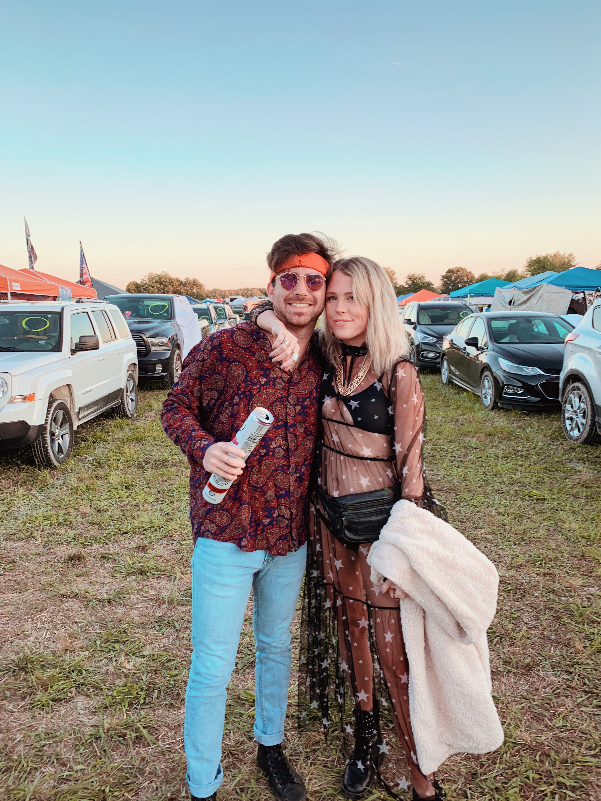

I was born and raised in Fort Myers, Florida in 1994. I love watching all sports, but specifically baseball. Aside from that, I'm an avid music listener. Dabbling with genres like: Disco, House, Techno, Minimal and everything in between. I frequent Club Space in Miami, Florida, and Trade on South Beach. When I'm not watching baseball or clubing, I like trying new restuarants with my girlfriend. Thanks for coming to my Ted Talk.
